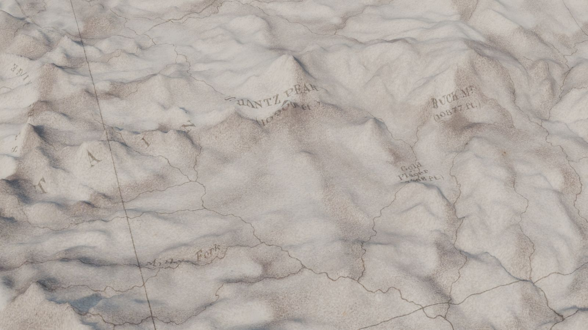
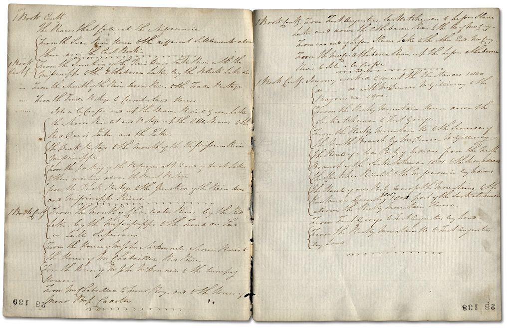
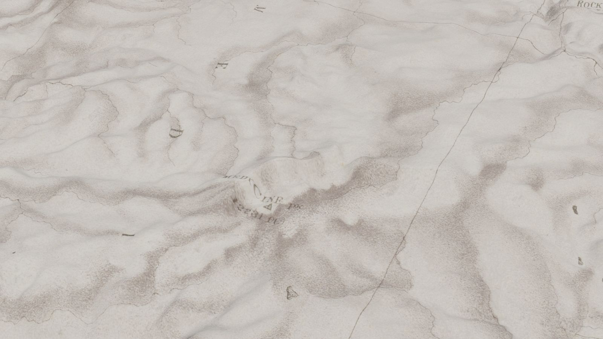
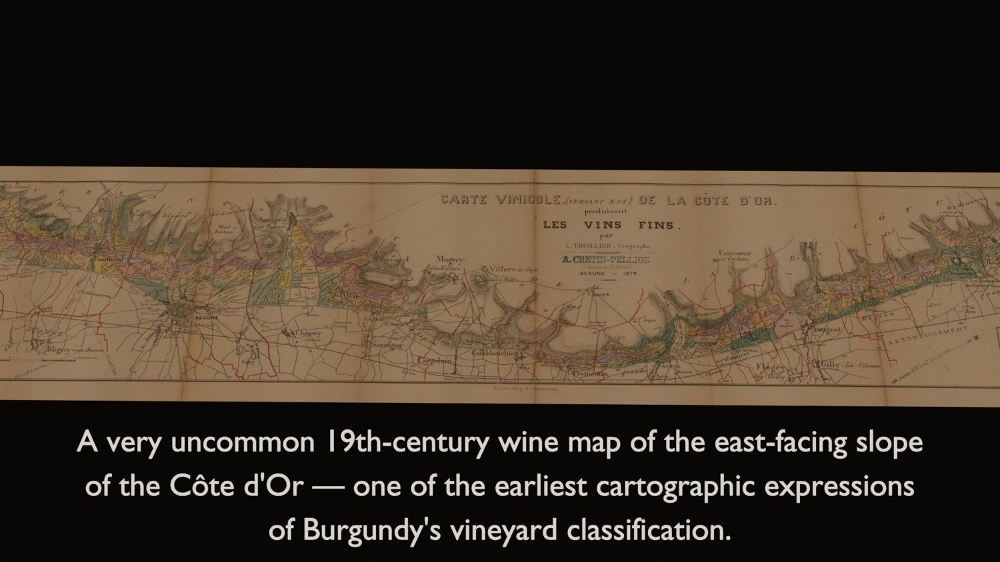
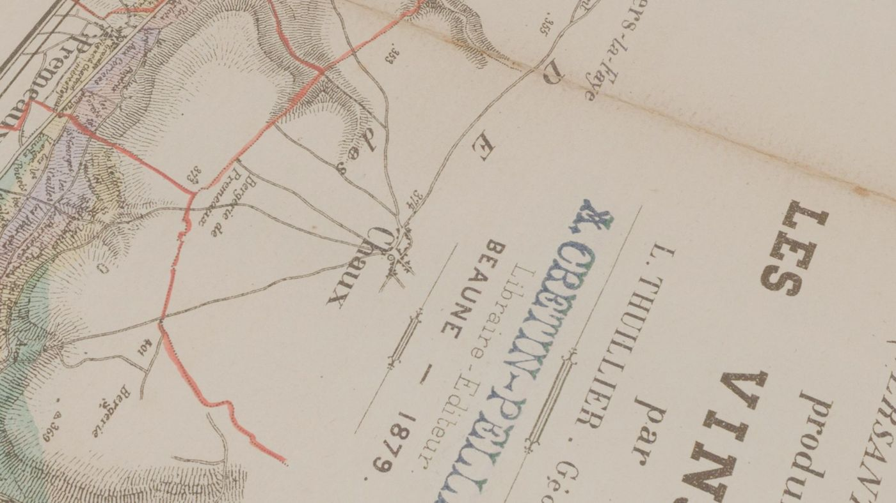

Verbatim transcription dossiers and cinematic flyable-map films, built from your existing scans. Fixed price. Days, not months.
A Napoleon letter estimated at €60–80,000 sold for €320,000 once its contents were read and told. Meanwhile, box lots of letters and ledgers go to the block with one-line descriptions, because specialist time is too expensive to spend deciphering them. Every unread page is money left on the table.

1 Book Contd. — The Rivers that fall into the Missisourie.
From the Swan River House the different Settlements above there, as in the last Book.
From the Junction of the Rein Deer Lake River with the Missisippe to the Athabasca Lake, by the Black Lake &c. From the Mouth of the Rein Deer River, to the Trade Portage. From the Trade Portage to Cumberland House…
Page-by-page, line-by-line. Uncertain readings flagged, period spellings preserved, maps and sketches extracted and placed inline. This is what your catalog note is built from.
Below: the King Survey of the 40th Parallel (1876) draped over real mountain elevation, and Thuillier's 1879 wine map of the Côte d'Or flown from Dijon to Santenay — both built entirely from dealer scans.



Check out securely through Stripe. Your confirmation explains exactly what to send.
Reply to your receipt with a download link — PDF, TIFF, or JPEG, any resolution you have. Originals never leave your vault.
Dossiers arrive within 72 hours; films within a week. Everything is yours, delivered under your brand.
Free your specialists for attribution instead of deciphering. Turn one-line box lots into described, searchable, marketable lots — and give star lots a film worth sharing.
Executors can't inventory what nobody can read. Dossiers give appraisers the description and context the IRS expects for manuscripts over $3,000 — billed cleanly through the estate.
Cataloging expert time runs $75–250 an hour. A fixed-price dossier turns an unread archive into sellable, citable inventory without burning your own hours.
No — and we say so plainly. We deliver legibility and story: what the document says, what it depicts, how it reads in context. Authentication opinions belong with the established authorities; our dossiers sit alongside them and make their job easier.
Raw HTR output needs model selection, correction, formatting, and image extraction before anyone can use it. You are not buying software output — you are buying a finished, verified, citation-ready document. The AI cost inside it is a rounding error; the value is the finished good.
Whatever you have. Phone photographs of a ledger work; 600-dpi TIFFs work better. If a passage is genuinely unreadable we flag it as such rather than guess — every uncertain reading is marked.
You do, outright. Films are built from your scans of public-domain works and delivered under your brand. We keep nothing but the invoice.
Buy multiple dossiers in one checkout — quantity is adjustable — or write first and we will quote the file as a single job.
Usually. Email with the sale date before ordering and we will confirm the turnaround in writing.